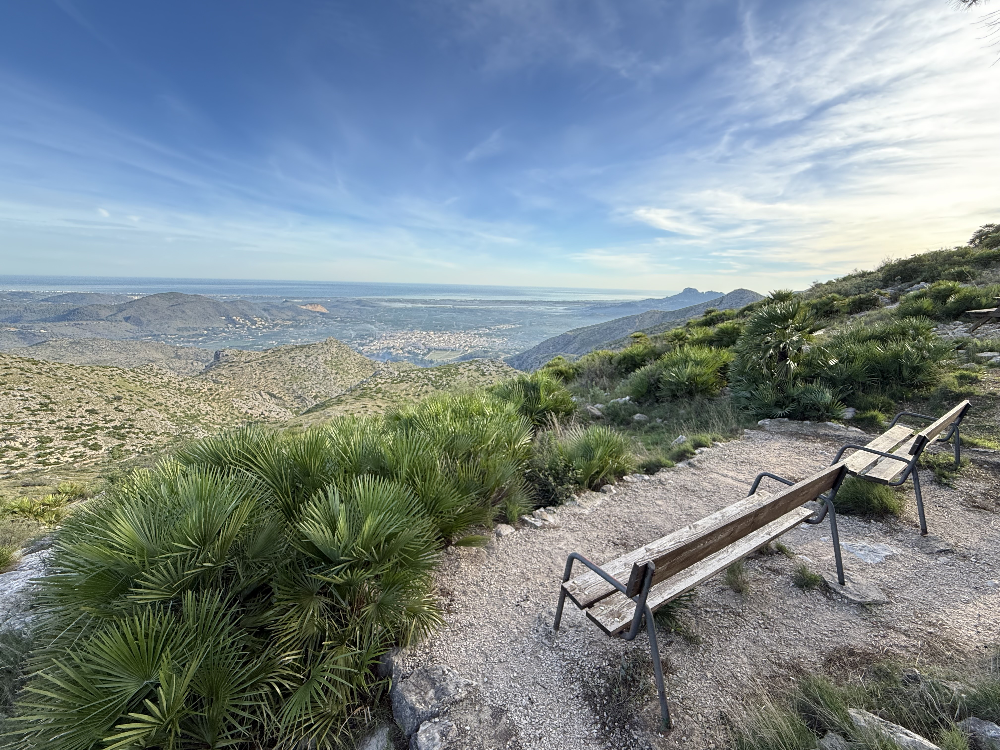

Amics de diferents generacions, amants de la natura i dels esports d'aventura.
Amigos de diferentes generaciones, amantes de la naturaleza y de los deportes de aventura.
El CEP està format per amics de diferents generacions, amants de la natura i dels esports d'aventura. Gran part dels membres del CEP som persones de diferents edats, amb gran dedicació en tot allò que fem.
El CEP está formado por amigos de diferentes generaciones, amantes de la naturaleza y de los deportes de aventura. Gran parte de los miembros del CEP somos personas de diferentes edades, con gran dedicación en todo lo que hacemos.
Actualment, el CEP té dos seccions principals: per una banda aquells que fan senderisme tant per la zona com per terres més llunyanes, aprofitant els caps de setmana i ponts festius. Per una altra banda, existeix un altre grup més dedicat a l'escalada, majoritàriament esportiva, bloc i clàssica.
Actualmente, el CEP tiene dos secciones principales: por un lado aquellos que hacen senderismo tanto por la zona como por tierras más lejanas, aprovechando los fines de semana y puentes festivos. Por otro lado, existe otro grupo más dedicado a la escalada, mayoritariamente deportiva, bloque y clásica.
A banda d'aquestes activitats, en el CEP també realitzem altres activitats com alta muntanya, espeleologia i barranquisme.
Aparte de estas actividades, en el CEP también realizamos otras actividades como bicicleta de montaña, alta montaña, espeleología y barranquismo.

Rutes tots els mesos de l'any excepte a l'estiu, per la zona i per terres més llunyanes.
Rutas todos los meses del año excepto en verano, por la zona y por tierras más lejanas.
Escola d'escalada al Calvari amb 28 vies equipades, esportiva, bloc i clàssica.
Escuela de escalada en el Calvari con 28 vías equipadas, deportiva, bloque y clásica.
Les principals cavitats de la nostra zona i els avencs del massís de la Figuereta.
Las principales cavidades de nuestra zona y los avencos del macizo de la Figuereta.
Descens de barrancs amb material i topografia dels principals de la comarca.
Descenso de barrancos con material y topografía de los principales de la comarca.
Eixides d'alta muntanya i turisme rural amb base al refugi La Figuereta.
Salidas de alta montaña y turismo rural con base en el refugio La Figuereta.
Estació meteorològica al refugi connectada a la xarxa AVAMET.
Estación meteorológica en el refugio conectada a la red AVAMET.
Per a gaudir dels avantatges de ser soci del centre excursionista, només has d'abonar 35 € a l'any, els quals són necessaris per a dur a terme el nostre manteniment i senyalització de sendes de tot el terme de Pego i les valls, així com per a compensar a eixa gent que dóna el seu temps per a contribuir a que la muntanya estiga neta i agradable.
Para disfrutar de las ventajas de ser socio del centro excursionista, sólo debes abonar 35 € al año, los cuales son necesarios para llevar a cabo nuestro mantenimiento y señalización de las sendas de todo Pego y sus valles, así como para compensar a esa gente que da su tiempo para contribuir a que la montaña esté limpia y agradable.
Alta soci@Alta soci@ Baixa soci@Baja soci@També podràs accedir a una sala d'entrenament (50 euros a l'any) dedicada a totes les disciplines de muntanya per a poder entrenar i fer amics. A més, gaudiràs de descomptes al nostre refugi exclusiu enmig de la muntanya.
También podrás acceder a una sala de entrenamiento (50 euros al año) dedicada a todas las disciplinas de montaña para poder entrenar y hacer amigos. Además, disfrutarás de descuentos en nuestro refugio exclusivo en medio de la montaña.
El centre excursionista fa rutes tots els mesos de l'any excepte a l'estiu.
El centro excursionista hace rutas todos los meses del año excepto en verano.